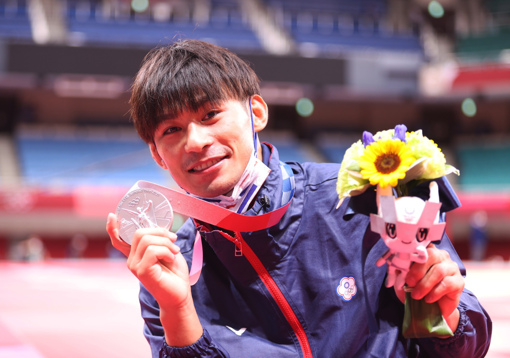

Home
Introduction
Sports
Store
Comment
Games
Ranking
vote
message board
網路聲量熱門選手
戴資穎:
228010
則
郭婞淳:
204941
則
楊勇緯:
171172
則
鄭怡靜:
112722
則
莊智淵:
107875
則
為喜歡的選手加油
戴資穎
郭婞淳
楊勇緯
鄭怡靜
莊智淵

為羽后點讚
為舉重女神點讚
為柔道男神點讚
為桌球一姐點讚
為桌球教父點讚
一起為中華隊加油!
想說的話:
submit